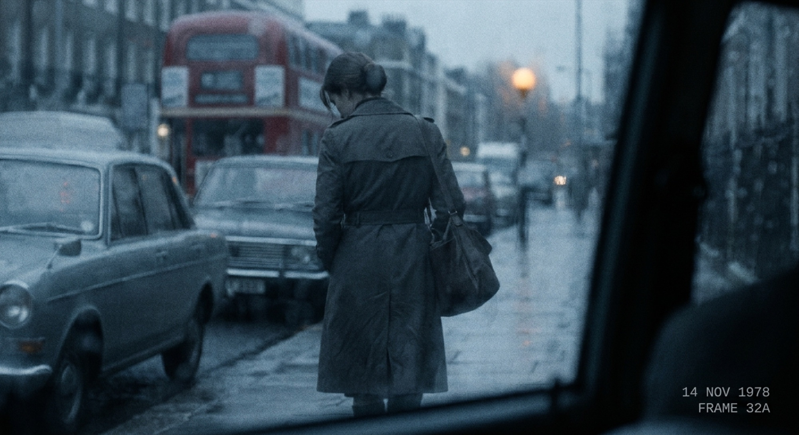
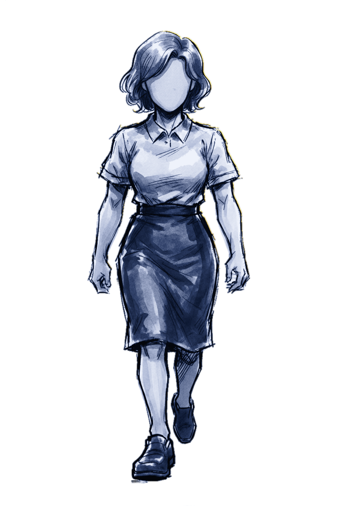
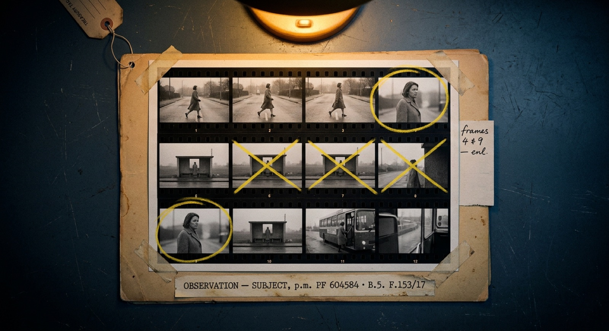
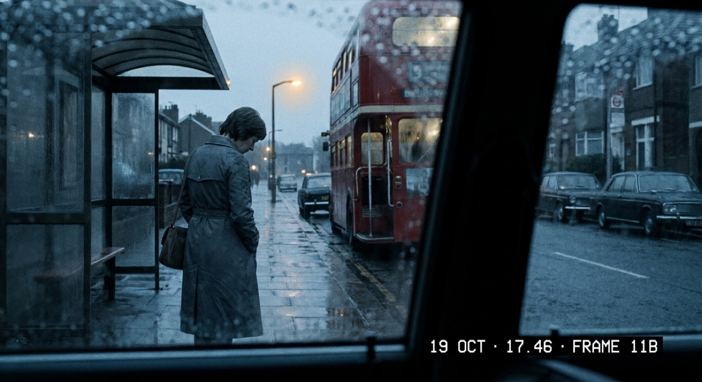
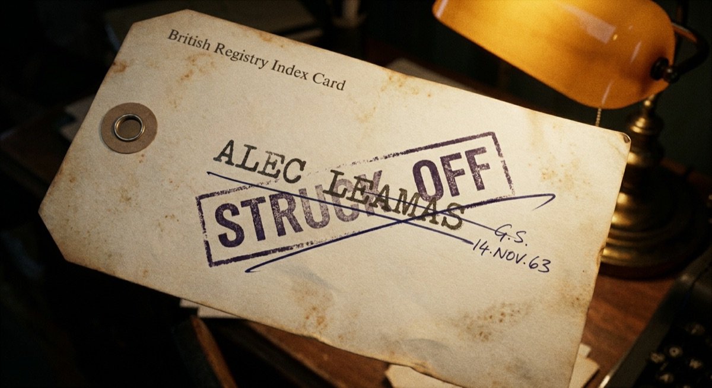
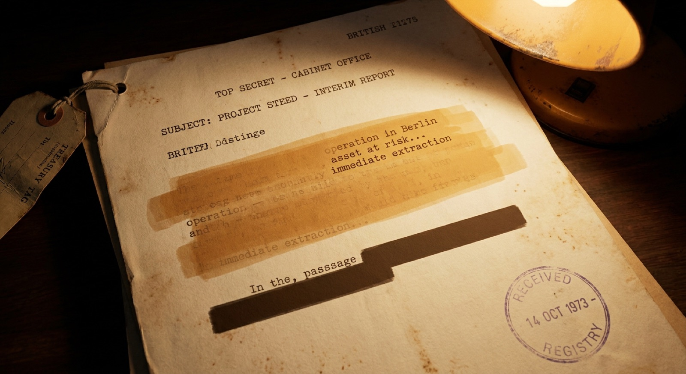
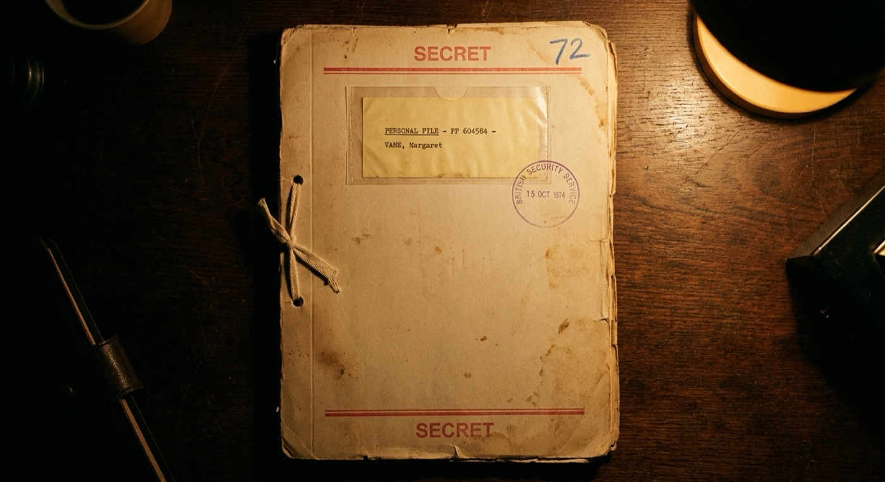
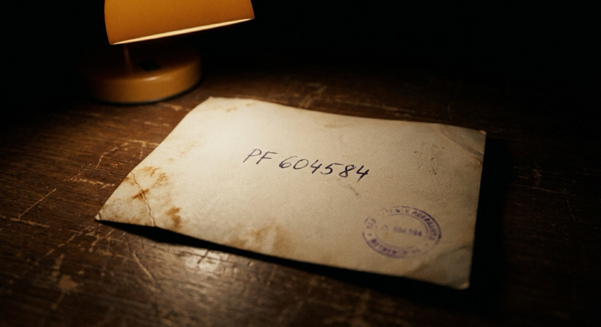
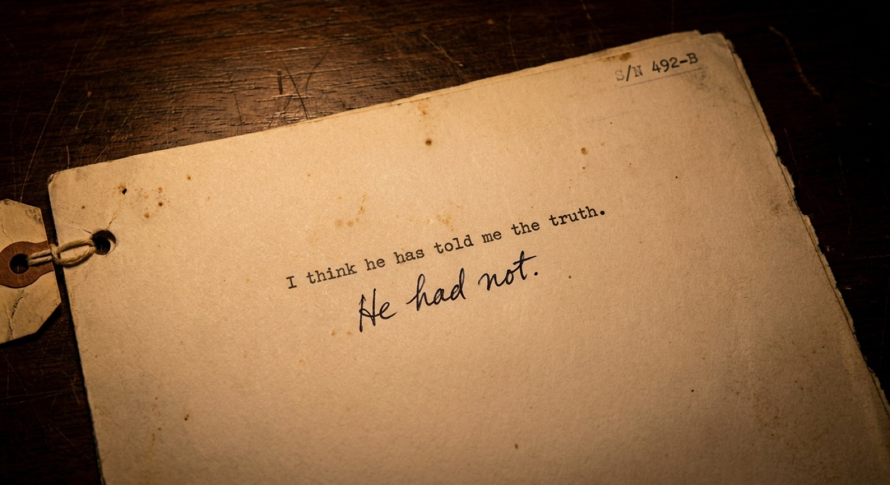
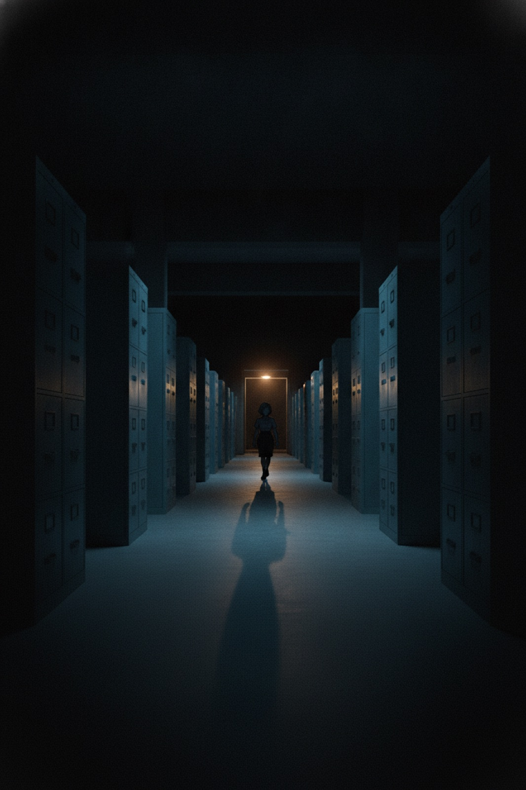

Filed UnderNo One
She kept the country's secrets. The country kept one — about her.
For eleven years, Margaret Vane sat at the Registry and decided what the country was allowed to see. She was good at it. Then she opened a ledger she was meant to file and not read — and found it was quietly killing the living by writing them down as dead. She did the correct thing. She reported it. By morning she had never existed.


Read the whole book, free.
Filed Under No One is free to read online, in full — and coming in paperback and e-book. No list to join, nothing to buy yet; when it's ready to own, it will be here.
What the record says
PF 604584 · Vol. IIMargaret Vane spent eleven years at the Registry deciding what the country was allowed to see — the watcher who chose the blind spots, posted the guards, aimed the lights. When she finds a ledger that files the living as dead and reports it, she is struck from every register that ever held her. For eleven weeks she is no one. Then she goes back in — past her own guards, through her own blind spots — to take back the proof that she was real.
0907 SUBJECT left place of employment. 0914 SUBJECT at bus stop, Stop C; read timetable. 0958 SUBJECT entered the public library; remained until 1105 hrs. 1112 purchased nothing of note. ANALYTIC CODA: No unusual contact observed. Routine behaviour.







Read the whole book.
Free, online, in full — what the file says, and everything it was built to leave out. Margaret Vane's story, end to end.
Read free online →
The book stops at the threshold.
The game is the night she goes back in. A free, top-down stealth game in the same dark — post the guards, aim the lights, slip the blind spots she drew herself.
Walk her route →